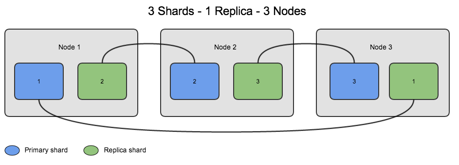

Topology
Matthew Haffner
Topology in mathematics
- Spatial relationships between objects
Origins
- Leonard Euler and the Konigsberg Bridges

Bridges of Konigsberg

Bridges of Konigsberg

Bridges of Konigsberg

Topology in mathematics
- Spatial relationships between objects
- Example:
- Mobius strip
- Knot theory
Mobius strip
MC Escher

MC Escher

MC Escher

Knot theory

Topology Exercise
Article
RDBMS
- SQL
- PostgreSQL, MySQL, MSSQL Server
RDBMS
- Example:
- Customers at a bank
- Historical properties in Oklahoma
NoSQL
- "Not only SQL"
- Cassandra, MongoDB, Elasticsearch, CouchDB, BigTable
Sharding

Sharding

Alternative spatial data formats
- GeoHash
- GEOJSON
- Database formats
GeoHash
GeoHash
GeoHash
GeoJSON